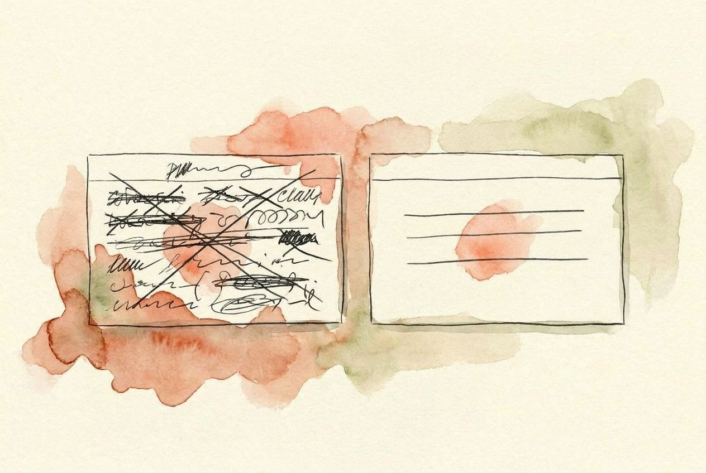
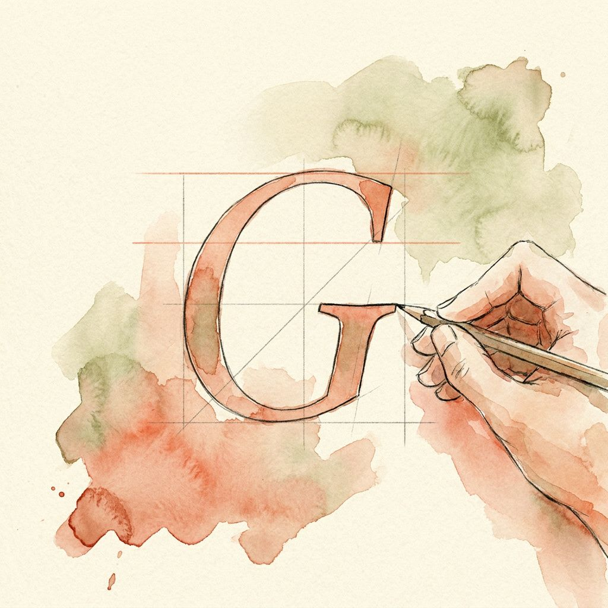
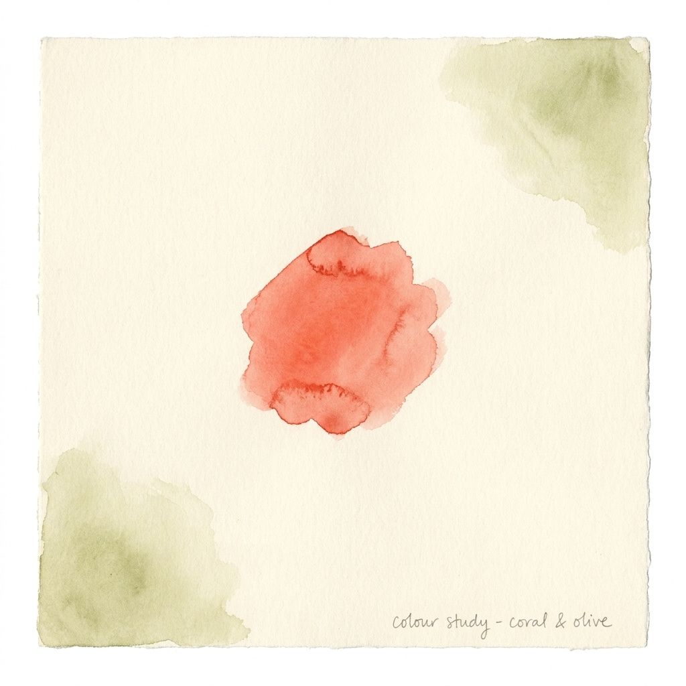
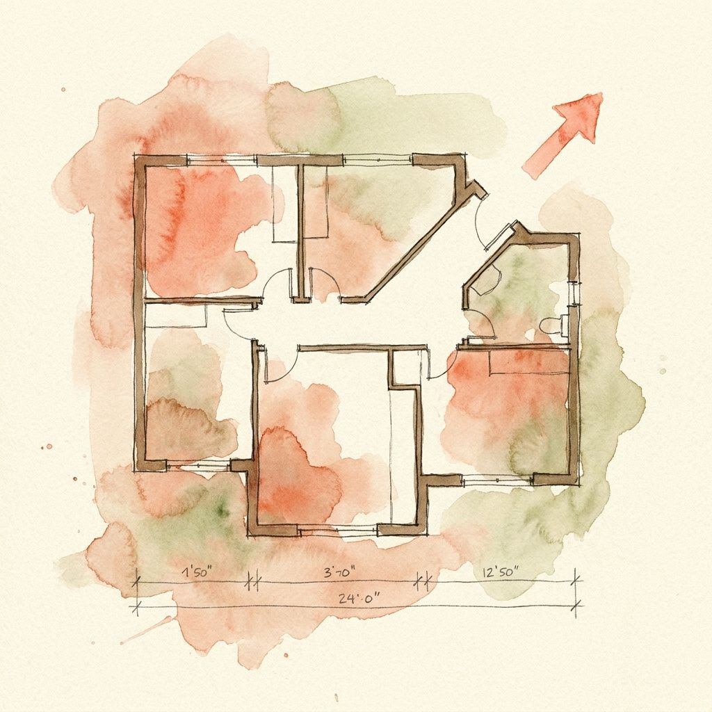
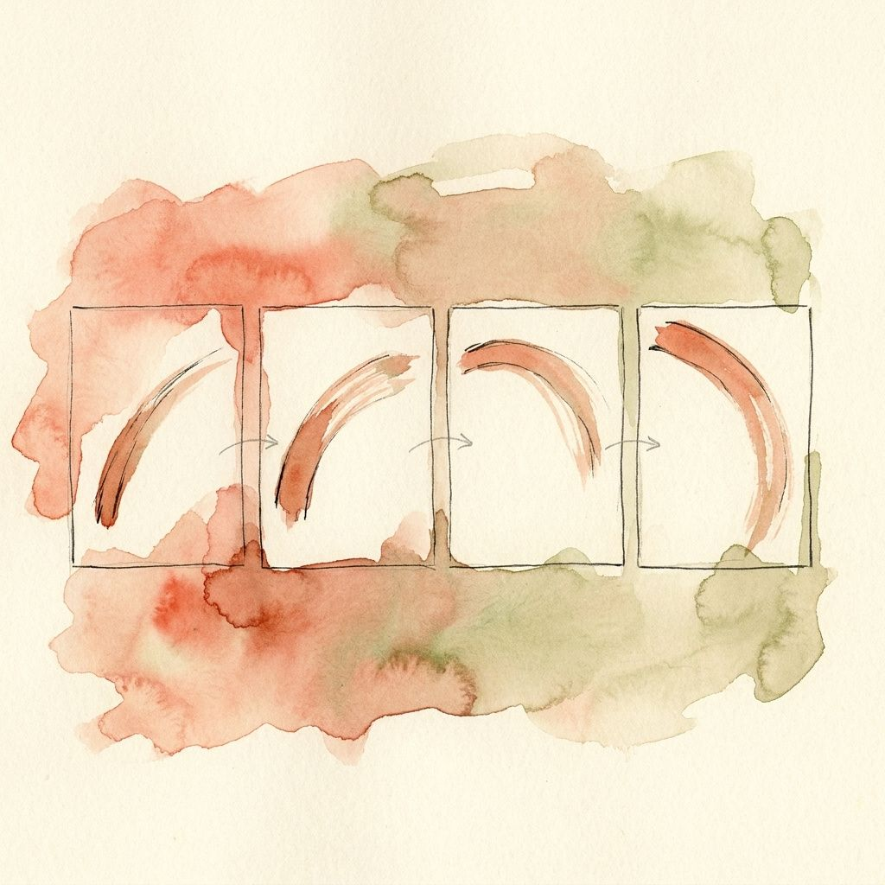
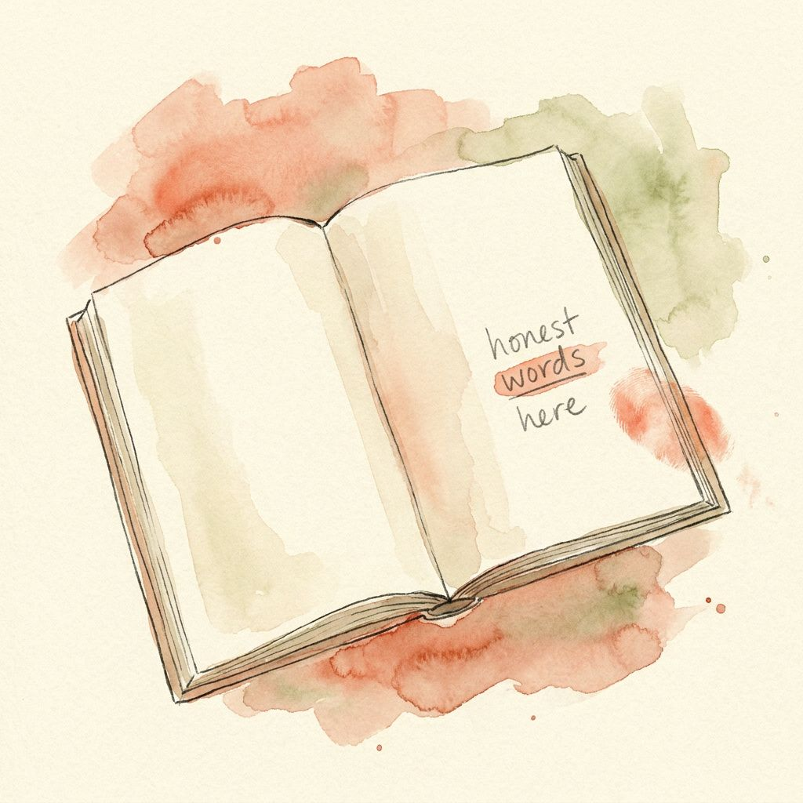
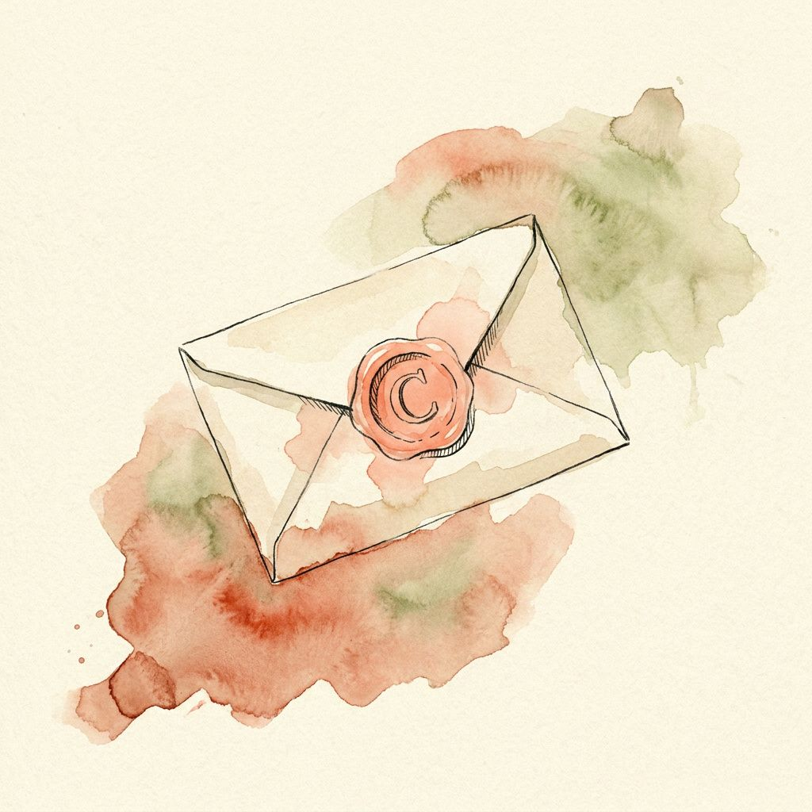
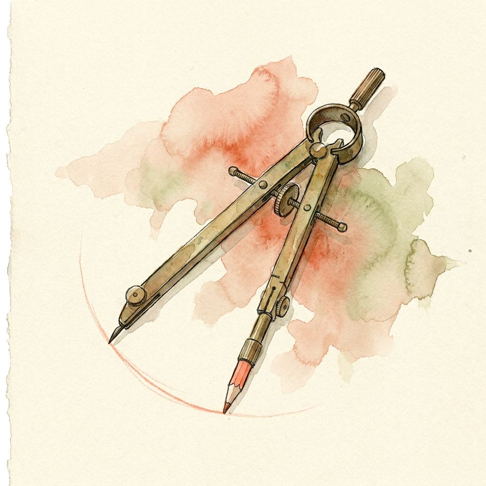

Rhythmthree-step walkthrough · sticky right panel · medium padding
04⁄Without / with
Same brief. Same words. Two very different pages.
Without Hallmark
✨ Introducing
Notes that think with you.
A writing tool that organizes your ideas as you draft.
Try free
Centred everything. Purple-to-pink gradient on the headline. Inter top to bottom. A pill button with a gradient fill. A page every LLM has produced ten thousand times.
With Hallmark
Introducing
Notes that think with you.
A writing tool that organizes your ideas as you draft.
Try free →
Left-aligned, asymmetric. A display face with character set against a clean body. One small accent on the eyebrow only. A square-edged button. Same words — a page that knows what it is.
Without Hallmark
📊 Overview
1,284
Active sessions today
↑ 12%
Up from yesterday. Across 47 regions.
View report
A glassmorphic widget. Gradient sparkline. Floating green-glow badge. Pill button with gradient fill. Centred on a softly-shadowed card. The AI-default dashboard.
With Hallmark
Overview
1,284↑ 12%
Active sessions today. Up from yesterday — across 47 regions.
View report →
Hairline rule above the figure. Mono tabular numerals at display size. Inline 12% with a single accent dot, no glow. Asymmetric, left-aligned. Square-edge CTA. Information, not decoration.
Without Hallmark
✨ Most popular
Starter
$24/month
For solo writers and side projects.
✅ 5,000 words / month
✅ Unlimited drafts
✅ Email support
Choose Starter
Glassmorphic centred card. "Most popular" badge with sparkle emoji. Gradient on the price. Emoji checkmarks. Pill button with gradient fill. The B2B SaaS pricing card the LLM ships every time.
With Hallmark
Recommended
Starter
$24/ month
For solo writers and side projects.
5,000 words a month
Unlimited drafts
Reply-by-Wednesday email support
Choose Starter →
Tier name set in display face above a hairline rule. Mono tabular price. No gradients, no glow, no emoji. Plain bullets, plain rules. The price is the design.
Without Hallmark
A
Anya Reyes
Software architect & distributed-systems builder.
AboutWorkContact
Centred avatar bubble. Gradient on the name. Three pill nav buttons in a row. Inter top to bottom. The portfolio template the LLM falls back to when it doesn't know who you are.
With Hallmark
About · 01
Anya Reyes.
Software architect, ten years on distributed systems. Currently building Streampipe. Writes about latency and the small print of caches.
No avatar. Italic name with a roman emphasis on the surname. Numbered eyebrow (01) like a chapter mark. Body serif bio that reads like a letter. Plain text links separated by middots. A page that knows its subject.

05⁄Foundations
Five things Hallmark holds the line on.

Pick fonts on purpose. Skip the defaults. Pair a display with personality and a clean body, and lean into extreme weights — not the safe middle.
HallmarkFraunces · 900 italic
HallmarkGeist · 300
HallmarkMono · 500

One accent, used so sparingly you almost miss it — under 3% of the screen. Skip pure black and pure white. Avoid purple gradients.
One accent. The whole field is paper. The dot is the accent.
Paper
Rule
Mute
Ink
Accent

Generous space, used unevenly. One consistent scale. Asymmetry on purpose — centred-everything is a tell.
Centred (a tell)Asymmetric (designed)

Keep motion quiet. One smooth entrance feels designed; ten little bounces feel busy. Animate fade and slide — never size, colour, or layout.

Write like a person. Specific verbs. Link text that makes sense out of context. Real apostrophes. No "seamless," no "unleash," no "built for the modern team."
Vague
Click here
Get started
Built for the modern team
Unleash the future
Specific
View pricing plans
Save changes
The email API for developers
Notes that think with you
06⁄FAQ
The questions people actually ask.
Q ⁄ 01
Does it work with Cursor and Codex?
Yes. Drop the body of SKILL.md into .cursor/rules/hallmark.mdc for Cursor, or copy the skill/ folder into your Codex agent config. Claude Code picks it up at ~/.claude/skills/hallmark/.
Q ⁄ 02
Can I disable a specific rule?
Most rules are universal — typography discipline, accessibility, anti-purple-text-gradient. Genre-specific rules can be loosened by picking a different genre: atmospheric allows dark-canvas radial gradients that editorial bans; modern-minimal allows pure white that editorial bans.
Q ⁄ 03
What if I want my brand colours, not the catalog?
Mention them in the brief, or attach a brand colour. Hallmark's custom-theme route builds an OKLCH palette tuned to your anchor and pairs free fonts to it — full rules still apply, just on your colours.
Q ⁄ 04
What does "AI-slop" mean exactly?
Twenty-one named tells the LLM reaches for by default — purple-gradient hero, centred-everything, icon-tile feature row, glass card, gradient headline, pill button with gradient fill. Run hallmark audit on any page to see them flagged.
Q ⁄ 05
Five verbs — what do they do?
hallmark (default) builds. hallmark audit scores existing code. hallmark refine polishes in place. hallmark redesign rethinks structure — and on a whole project, writes a design.md first so every page shares the system. hallmark study reads a screenshot you admire and extracts its DNA, never the pixels.
07⁄Install
One command. Works in every harness.
I Run
$npx skills add hallmark
II In

Claude Code~/.claude/skills/hallmark/auto-detected

Cursor.cursor/rules/hallmark.mdcauto-detected
Codex & othersgit clone · copy skill/manual
III Then
Ask your agent for a UI. hallmark attaches itself.


 01 · Tide
01 · Tide